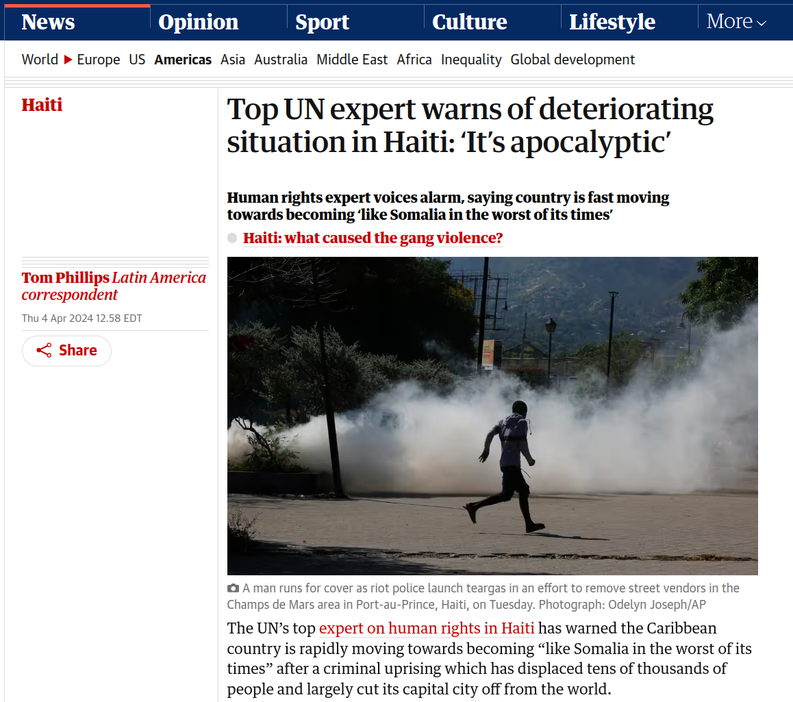
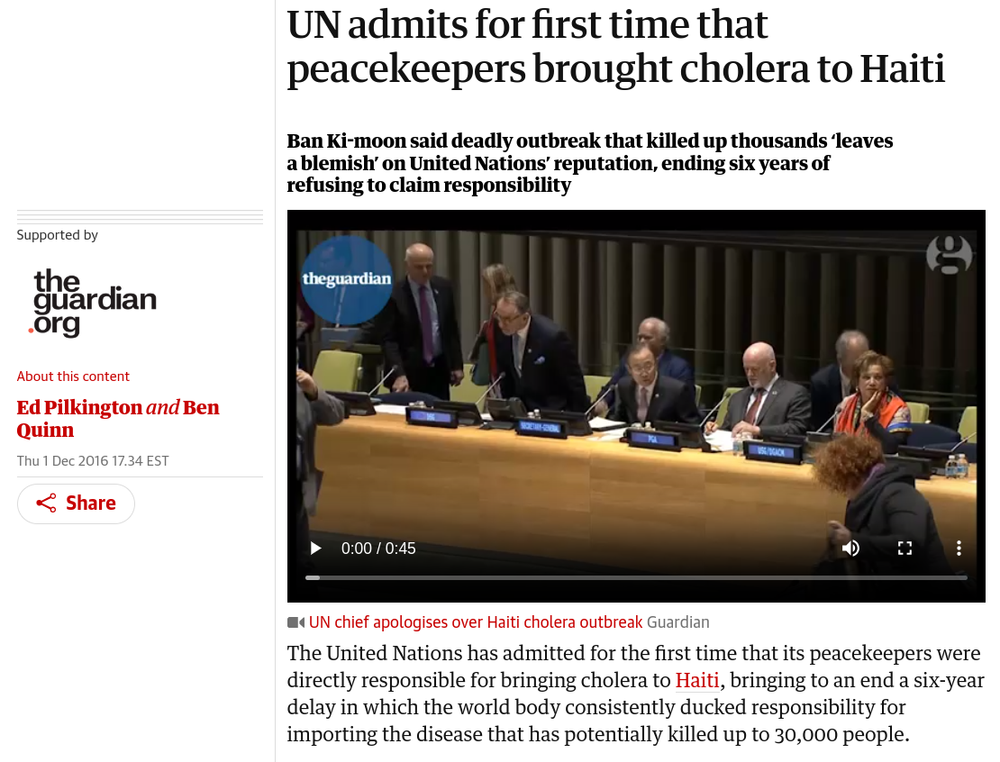
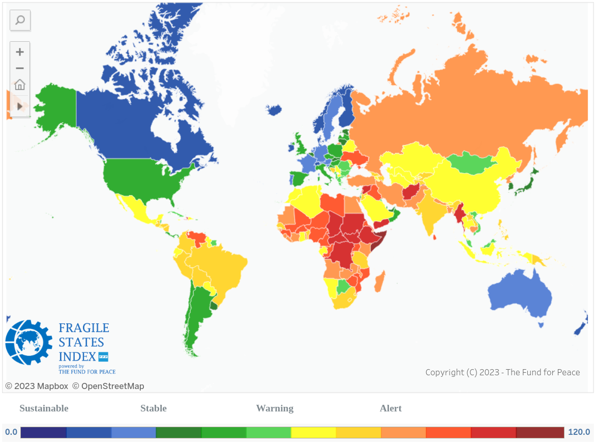
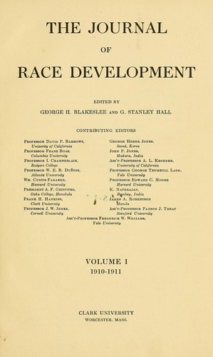
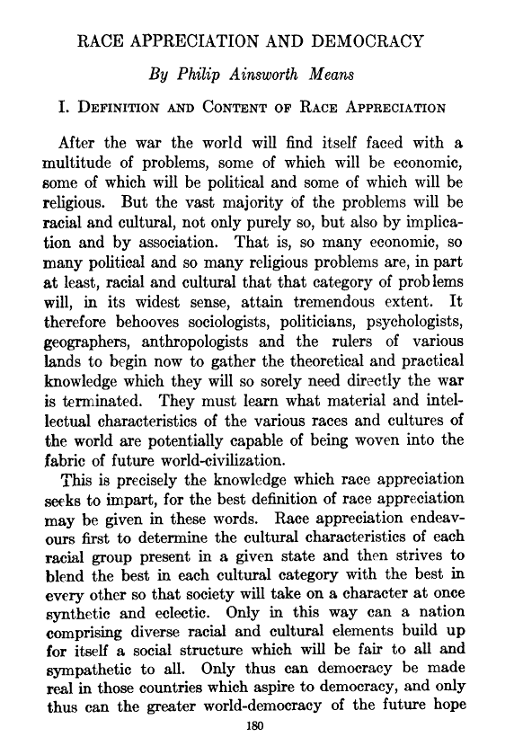

Today’s Agenda
IV. What is the Future of Transnational Politics and IR?
- Critical Theories of IR: Postcolonialism and Race
Justin Leinaweaver (Spring 2026)
Postcolonial IR Theory
Postcolonialism tends to emphasize “how societies, governments and peoples in the formerly colonised regions of the world experience international relations” (Nair 2017).
Postcolonial IR Theory

Postcolonial IR Theory
Postcolonial IR Theory
Race is:
a social phenomenon
a ‘relation’, not a ‘thing’
a product of racism
a reflection of power
“Race” is a tool invented by the powerful in order to control, exclude and exploit the less powerful
Race in Global Society (p11-16)
?
?
?
Therefore, “race” is a tool invented by the powerful in order to control, exclude and exploit the less powerful.
Race in Global Society (p11-16)
“Race” sometimes means “civilization,” “spirit,” “blood,” “nature,” “culture” and any combination too
“Racism” has evolved and adapted to the times (from biological to pseudo-scientific standards of civilization)
Tons of examples across history and into the present day of states using race to maintain or extend their power
Therefore, “race” is a tool invented by the powerful in order to control, exclude and exploit the less powerful.
“Race and Global Economic Development” (p17-22)
“Race and Global Economic Development” (p17-22)
“Race and Global Economic Development” (p17-22)

“Race and Security” (22-29)
What does this mean for International Relations?
Henderson’s (2013) Argument
Therefore, most of the current IR theories cannot be used to produce meaningful research or policy for the “vast majority of the world’s people” (90).


Vol 1, Issue 1 (1910)
The Point of View Toward Primitive Races
G. Stanley Hall

Vol 9, Issue 4 (1918)
Race Appreciation and Democracy
Philip Ainsworth Means
Kant’s (1798) Plan for Perpetual Peace
The First Definitive Article for Perpetual Peace
- “The Civil Constitution of Every State Should Be Republican”
The Second Definitive Article for Perpetual Peace
- “The Law of Nations Shall be Founded on a Federation of Free States”
The Third Definitive Article for Perpetual Peace
- “The Law of World Citizenship Shall Be Limited to Conditions of Universal Hospitality”
Kant and the Nazis
“…the embarrassing fact for the white West (which doubtless explains its concealment) is that their most important moral theorist of the past three hundred years is also the foundational theorist in the modern period of the division between Herrenvolk and Untermenschen, persons and subpersons, upon which Nazi theory would later draw” (Mills 1997, 72).
What does this mean for International Relations?

Assignment for Next Class
Get ready for Paper 3!
- Collect and review your notes for all of the IR models we have explored this term
Slides to save for future
Assignment for Next Class
What is the single biggest international threat facing the United States over the next 25 years?
Submit APA evidence and explanation to Canvas
Be specific, try to avoid overlap!
Questions on the assignment for next class?
Can be a “what” or a “who”, it’s up to you!
Help us build a wide array of options, try to avoid direct overlaps!
What does this mean for International Relations?